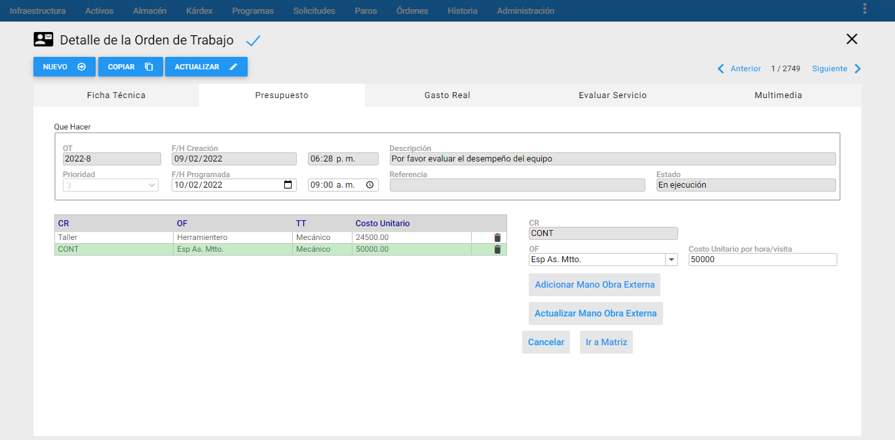
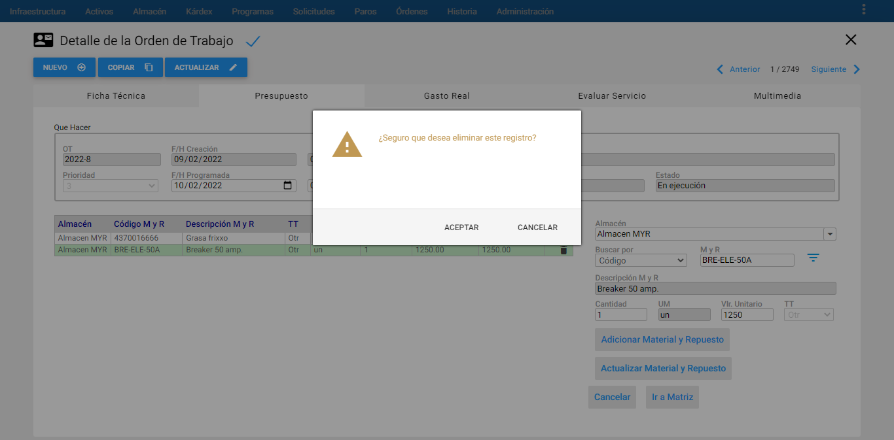
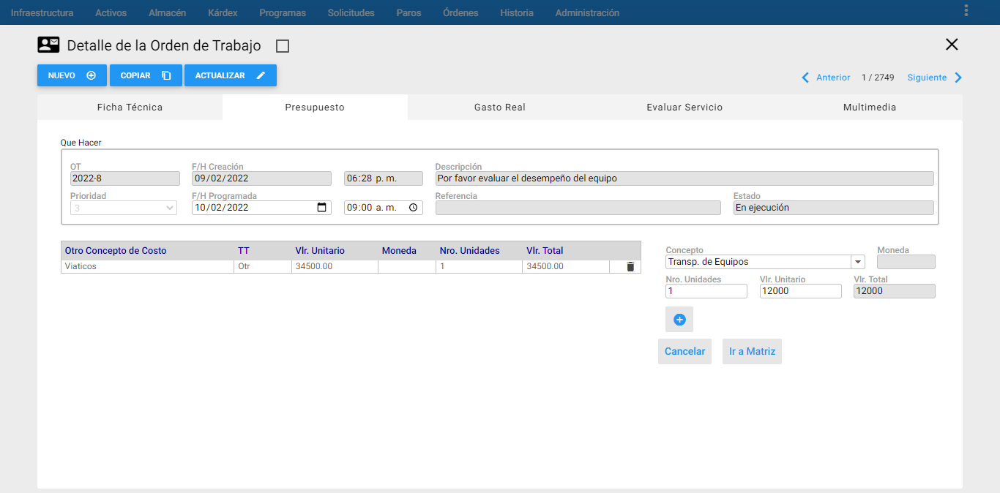
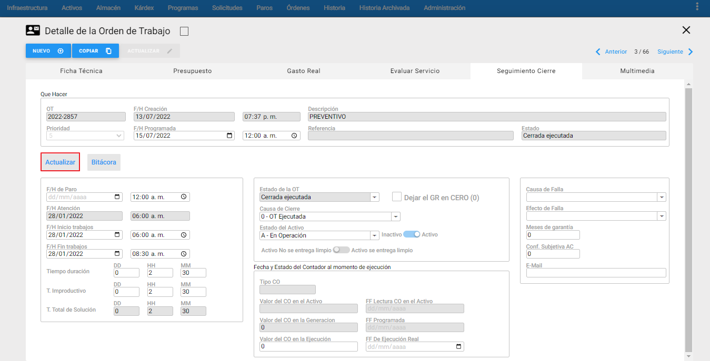

Acciones técnicas
Esta opción conduce a la tabla de Acciones Técnicas en una nueva pestaña de la OT. Esta tabla está ligada a la Infraestructura, creada con su mismo nombre, que contiene un listado de Acciones Técnicas frecuentes en un área de Mantenimiento. Con la información contenida allí, se pretende describir, breve pero concretamente, la actividad general realizada en una OT. Las Acciones Técnicas en una OT se pueden definir, después de haber seleccionado en la ventana Detalle de la Ficha Técnica de la OT en el momento de su creación, el cuadro llamado Acciones Técnicas o bien, haberlas definido en la creación del Programa de Mantenimiento, continuación se muestra la porción Acciones Técnicas de una OT:
 Imagen 73. Órdenes - Ventana Detalle Acciones Técnicas
Imagen 73. Órdenes - Ventana Detalle Acciones Técnicas
En la pestaña de Acciones Técnicas de la Ventana Detalle de OT aparece un nuevo recuadro en el que irán apareciendo las que se vayan adicionando a través del botón Adicionar Acción Técnica.
A continuación se describen los campos que componen esta ventana de información adicional:
Que Hacer: Aparece con los campos bloqueados para que el usuario visualice la información básica de la OT a la cual se le están asociando las Acciones Técnicas.
Nro. Ordinal: Es el ordinal asignado a cada Acción Técnica según el orden en el que se vayan adicionando.
Acción Técnica: En este campo se muestran las Acciones Técnicas definidas en la OT.
Al accionar el botón Adicionar Acción Técnica se habilita el conjunto de Acciones definidas por mantenimiento desde la tabla de infraestructura correspondiente.
Las Acciones Técnicas se seleccionan de la lista desplegable y se adicionan con el botón del signo
 Imagen 74. Órdenes - Adicionar Acciones Técnicas
Imagen 74. Órdenes - Adicionar Acciones Técnicas
Realizado: Este es un campo que una vez agregada la Acción Técnica, se puede actualizar, dando clic en el botón Check de forma manual desde AM, o también retroalimentándola desde AMovil. Una vez se marque esta opción en el detalle de la tabla aparece un Si, de lo contrario aparece un No.
 Imagen 75. Órdenes - Actualizar Acciones Técnicas
Imagen 75. Órdenes - Actualizar Acciones Técnicas
Valor: Este campo se habilita una vez se haya agregado la Acción Técnica y es posible actualizarla ingresando un valor numérico en el campo si aplica.
Unidad: Es la unidad de duración que tiene la Acción Técnica. Es un campo protegido que viene desde su respectiva tabla en Infraestructura y puede ser expresada en Días, Horas o Minutos.
Comentario: Es un campo que se habilita una vez se añada la Acción Técnica, el cual da claridad o detalles sobre la acción ejecutada.
Nota: Para actualizar o guardar los detalles de una Acción Técnica se hace un clic sobre ella y luego se acciona el botón Actualizar Acción Técnica. Para eliminar o desasociar una Acción de una OT, se debe seleccionar y hacer un clic sobre el icono . Estos cambios quedan automáticamente guardados en la OT.
Presupuesto
En una OT Manual que se acaba de crear sólo se permite definir o modificar su Presupuesto si se ha establecido la opción Control Presupuestal , en la ventana detalle de la OT durante la creación de la OT. Esto significa que si a una OT no se le marcó el recuadro anterior, no tendrá la posibilidad de aceptar datos de Presupuesto, solamente de Gasto Real:
 Imagen 76. Órdenes - Presupuesto
Imagen 76. Órdenes - Presupuesto
Los datos de Gasto Real se pueden registrar en una OT en cualquier momento, mientras esa OT no exija Control Presupuestal. Pero si la OT exige Control Presupuestal, solo se puede registrar el Gasto Real después de haber aprobado el Presupuesto, en cuyo caso ya no será posible modificar este último.
Se muestra un ejemplo de una OT creada manualmente con manejo de Presupuesto:
 Imagen 77. Órdenes - Presupuesto
Imagen 77. Órdenes - Presupuesto
En esta ventana se resumen los totales de los costos presupuestados de Mano Obra Interna, Mano Obra Externa, Mat y Rep, O. Conceptos para acceder a cada uno de ellos se da un clic en el botón acorde a lo que se necesite ingresar en su respectiva ventana detalle, a continuación se explica detalladamente como ingresarlos:
Ingresar Mano de Obra Interna
 Imagen 78. Órdenes - Mano de Obra Interna
Imagen 78. Órdenes - Mano de Obra Interna
A través de la ventana de Ingreso de Mano de Obra Interna se administra el Presupuesto de Mano de Obra de la OT.
Es importante destacar que el presupuesto de Mano de Obra de una OT, se prepara a nivel de Oficio, es decir, no se tiene en cuenta la persona que va a realizar la labor, pues se trata de un presupuesto y no se conoce a ciencia cierta, en la mayoría de los casos, quiénes serán los encargados de ejecutar la labor.
En la izquierda de la ventana aparece un pequeño listado de los oficios presupuestados para la OT activa. A la derecha, es posible efectuar modificaciones, así como ingresar nuevos oficios al presupuesto.
A continuación se hace un clic en el botón Adicionar Mano Obra Interna se deberán diligenciar los siguientes campos:
CR: Es el centro responsable al que pertenece el oficio presupuestado. Es un campo de solo lectura, que se establece automáticamente al seleccionar el oficio.
OF: Lista los Oficios definidos en el módulo de Infraestructura. Aquí se escoge el Oficio a presupuestar.
TT: Muestra de manera automática el TT que tiene configurado el Oficio seleccionado. Es un campo de solo lectura, que se establece automáticamente en el recuadro de Mano de Obra Interna una vez se haya escogido el Oficio.
H. Hombre: Número de horas hombre requeridas presupuestadas según el Oficio descrito.
Minutos: Es el número de Minutos, que junto con las horas, conforman el tiempo total presupuestado. Así, si se desea presupuestar 4 horas y media de un oficio, debe ponerse “4” en el campo “H. Hombre”, y “30” en el campo “MM”.
Personas: Este campo indica cuántas personas van a desempeñar la labor. Retomando el ejemplo anterior, si se ingresa “2” en este campo, se está diciendo que 2 personas van a desempeñar el oficio. Como ya se definió que el total de tiempo requerido son 4 horas y media, se deduce entonces que entre las 2 personas se consumirá este tiempo.
Vr. Hora: Es el valor unitario de la hora para el oficio en cuestión. AM sugiere el costo hora traído desde la tabla de Infraestructura para el oficio, pero puede cambiarse.
Vlr. Total: Este campo es informativo y es calculado por el sistema, contiene el valor total del presupuesto para ese Oficio. Es el producto del Vlr. Hora por H. Hombre y Minutos. Se visualiza en la tabla de Mano de Obra Interna.
Una vez que se diligencian todos los campos se da clic en el botón , seguidamente se observa que la información creada se muestra en el recuadro de la mano de Obra Interna, ubicada al lado izquierdo.
Imagen 79. Órdenes - Ingresar MO
Una vez terminado el proceso, hacer clic en el botón Ir a Matriz para regresar a la ventana principal de Presupuesto.
Es posible, actualizar un registro una vez ingresado. Se debe seleccionar o dar un clic sobre el ítem y finalizar con el botón Actualizar Mano Obra Interna.
 Imagen 80. Órdenes - Actualizar MO
Imagen 80. Órdenes - Actualizar MO
Por otro lado, para eliminar un registro de la tabla de Mano de Obra Interna, se selecciona el registro y luego se da clic al icono , el cual muestra un mensaje de alerta que indica al usuario de si está seguro de eliminar el registro, para finalizar dar clic en ACEPTAR, como se muestra en la siguiente imagen:
 Imagen 81. Órdenes - Eliminar MO
Imagen 81. Órdenes - Eliminar MO
Ingresar Mano de Obra Externa
 Imagen 82. Órdenes - ME
Imagen 82. Órdenes - ME
A través de la ventana de Ingreso de Mano de Obra Externa se administra el Presupuesto de Mano de Obra Externa de la OT.
Es importante resaltar que el presupuesto de Mano de Obra Externa de una OT, se prepara a nivel de la Especialidad (Oficio) del Responsable Externo, es decir, no se tiene en cuenta a la persona natural o jurídica que va a realizar la labor, pues se trata de un presupuesto y no se conoce a ciencia cierta, en la mayoría de los casos, quiénes serán los encargados de ejecutar la labor.
A la izquierda aparece el listado de los oficios o especialidades presupuestados, a la derecha es posible efectuar modificaciones a los ítems presupuestados o nuevos ingresos de oficios al presupuesto.
Para ingresar nuevas especialidades al Presupuesto de la OT se debe dar clic en el botón Adicionar Mano Obra Externa y diligenciar los siguientes campos:
CR: Es el centro responsable al que pertenece el Oficio o Especialidad presupuestado. Es un campo de solo lectura, que se establece automáticamente al seleccionar el Oficio o Especialidad.
OF: Lista los Oficios o Especialidades definidos en el módulo de Infraestructura. Aquí se escoge el Oficio o la Especialidad a presupuestar.
TT: Muestra de manera automática el TT que tiene configurado el Oficio o Especialidad seleccionado. Es un campo de solo lectura, que se establece automáticamente en el recuadro de Mano de Obra Externa una vez se haya escogido el Oficio o Especialidad.
Costo Unitario por hora/visita: Se digita el valor unitario por hora o por visita de parte del responsable ejecutor externo para esa actividad programada, ya sea un Contratista o un Servicio Externo.
Una vez que se diligencian todos los campos se da clic en el icono del Más , seguidamente, se observa que la información creada se muestra en el recuadro de la mano de Obra Externa, ubicada al lado izquierdo.
Es posible, actualizar un registro una vez ingresado. Se debe seleccionar o dar un clic sobre el ítem registrado y luego finalizar con el botón Actualizar Mano Obra Externa.
 Imagen 83. Órdenes - Actualizar ME
Una vez terminado el proceso, hacer clic en el botón Ir a Matriz. para regresar a la ventana principal de Presupuesto.
Por otro lado, para eliminar un registro de la tabla de Mano de Obra Externa, se selecciona el registro y luego se da clic al icono de eliminar sale un mensaje de alerta que indica al usuario de si está seguro de eliminar el registro y finalmente se da clic en ACEPTAR, como se muestra en la siguiente imagen:
 Imagen 84. Órdenes - Eliminar ME
Imagen 84. Órdenes - Eliminar ME
Ingresar Materiales y Repuestos
 Imagen 85. Órdenes - M y R
Imagen 85. Órdenes - M y R
A través de la ventana de Ingreso de Materiales y Repuestos se administra el Presupuesto de Materiales y Repuestos de la OT. A la izquierda aparece el listado de los Almacenes y Materiales y Repuestos presupuestados.
A la derecha es posible efectuar modificaciones a los ítems o ingresar nuevos. Para ingresar nuevos Materiales y Repuestos, se debe dar clic al botón Adicionar Material y Repuesto se deben diligenciar los siguientes campos:
Almacén: Se elige el almacén dónde se encuentra el repuesto a ingresar al presupuesto.
Buscar Por: Este campo se listan las siguientes opciones para hacer la búsqueda de un Material y Repuesto: Código, Referencia, Cod. Barra Int y Cod. Barra Prov. Se habilitará una vez se elija el Almacén.
M y R: Este campo se habilita una vez se haya seleccionado el Almacén. Existen dos formas de seleccionar el Repuesto:
La primera consiste de forma manual solo digitando el valor correspondiente al código, referencia, código de barras interno o proveedor del Material y Repuesto.
La segunda consiste en buscar el Material y Repuesto, a través del visor de Material y Repuesto. Para ello se da un clic sobre el icono de filtro de Repuesto . Acto seguido se muestra la ventana de visor de Repuesto con la posibilidad de hacer allí subgrupos. Una vez se encuentra el Repuesto, se selecciona dando un clic sobre cualquiera de sus campos, seguidamente un clic sobre el botón ACEPTAR de esa ventana o también es posible seleccionarlo dando doble clic sobre el registro seleccionado. Inmediatamente ese código aparece en el campo de M y R y automáticamente se actualizan los campos de UM y Valor Unitario.
Descripción M y R: Es un campo de solo lectura, que muestra la descripción del material y repuesto seleccionado.
Cantidad: Es la cantidad presupuestada para el repuesto seleccionado.
Unidad de Medida: Es un campo de solo lectura que muestra la unidad de consumo del repuesto seleccionado.
Vlr. Unitario: Es el valor unitario del repuesto seleccionado. AM sugiere el valor unitario ya establecido del Repuesto en cuestión, sin embargo, puede cambiarse.
TT: Este campo de solo lectura, muestra el TT para el cual se presupuesta el Material o Repuesto.
Vlr. Total: Este campo es informativo y es calculado por el sistema, contiene el valor total del presupuesto para ese Repuesto. Es el producto entre el Vlr. Unitario y la Cantidad.
Una vez se diligencien estos campos se da clic en el botón para agregar como se muestra en la imagen anterior.
Es posible, actualizar un registro una vez ingresado. Se debe seleccionar o dar un clic sobre el ítem registrado y luego finalizar con el botón Actualizar Material y Repuesto.
 Imagen 86. Órdenes - Actualizar M y R
Imagen 86. Órdenes - Actualizar M y R
Una vez terminado el proceso, hacer clic en el botón Ir a Matriz para regresar a la ventana principal de Presupuesto.
Por otro lado, para eliminar un registro de la tabla de Material y Repuesto, se selecciona el registro y luego se da clic al ícono de eliminar sale un mensaje de alerta que indica al usuario si está seguro de eliminar el registro, finalmente se da clic en ACEPTAR como se muestra en la siguiente imagen:
 Imagen 87. Órdenes - Eliminar M y R
Ingresar otros Conceptos
 Imagen 88. Órdenes - OC
A través esta ventana de Ingreso de Otros Conceptos se administra el Presupuesto de Otros Conceptos de la OT.
A la izquierda aparece el listado de los Otros Conceptos presupuestados, a la derecha es posible efectuar modificaciones a los otros conceptos presupuestados, así como ingresar nuevos conceptos de costo al presupuesto.
Para ingresar nuevos Otros Conceptos al presupuesto de una OT, se debe dar clic al botón Adicionar Otro Concepto y diligenciar los siguientes campos:
Concepto: Es el “Otro Concepto” a presupuestar. Se selecciona descolgando la lista de otros Conceptos, traída desde su tabla en Infraestructura.
TT: Este campo de solo lectura, muestra el TT para el cual se presupuestó ese Concepto de Costo desde su tabla en Infraestructura.
Moneda: Este campo de solo lectura, muestra la moneda definida al otro concepto de costo en la tabla de Infraestructura.
Nro. Unidades: Se define el número de unidades del Concepto de Costo seleccionado anteriormente.
Vlr. Unitario: Es el valor presupuestado del “Otro Concepto Costo”. AM sugiere el valor unitario del concepto que se encuentra ingresando al sistema.
Vlr. Total: Es el costo total presupuestado del “Otro Concepto Costo” teniendo en cuenta el número de unidades y el valor unitario.
Una vez se diligencien estos campos se da clic en el botón para agregar.
Es posible, actualizar un registro una vez ingresado. Se debe seleccionar o dar un clic sobre el ítem registrado y luego finalizar con el botón Actualizar Otro Concepto, como se muestra continuación:
 Imagen 89. Órdenes - Actualizar OC
Imagen 89. Órdenes - Actualizar OC
Por otro lado, para eliminar un registro de la tabla de Otro Concepto de Costo, se selecciona el registro y luego se da clic al ícono de eliminar , mostrando un mensaje de alerta que indica al usuario si está seguro de eliminar el registro, finalmente se da clic en ACEPTAR como se muestra en la siguiente imagen:
 Imagen 90. Órdenes - Eliminar OC
Imagen 90. Órdenes - Eliminar OC
Nota: Al hacer cualquier ingreso o actualización sobre algunos de los conceptos anteriores se guardan automáticamente en la OT.
Gasto Real
Para ingresar a esta opción, se debe dar clic en la pestaña Gasto Real de la ventana detalle de OT. Los datos de Gasto Real se pueden registrar en una OT en cualquier momento, mientras esa OT no exija Control Presupuestal, pero si lo exige solo se puede registrar el Gasto Real después de aprobar el Presupuesto (en cuyo caso, ya no es posible modificarlo).
Para la primera alternativa se muestra un ejemplo:
 Imagen 91. Órdenes - Pasar Presupuesto a Gasto Real
Imagen 91. Órdenes - Pasar Presupuesto a Gasto Real
Una vez se apruebe el Presupuesto se tienen dos alternativas:
-
Trasladar el Presupuesto al Gasto Real a través del botón Pasar el Presupuesto al Gasto Real en el caso de que el Gasto Real sea igual al Presupuesto.
-
Registrar el Gasto Real aparte con el fin de establecer una comparación contra el Presupuesto.
Para el caso de la primera alternativa cuando se traslada el Presupuesto al Gasto Real, el sistema muestra un mensaje de confirmación y la ventana de Gasto Real se visualiza de la siguiente manera:
 Imagen 92. Órdenes - Gasto Real
Imagen 92. Órdenes - Gasto Real
Nota: Es posible modificar el Gasto Real en cualquier momento y en cualquiera de las alternativas anteriores. De igual forma cualquier modificación en él, establece una comparación contra el Presupuesto. Los valores en la matriz de los totales se muestran en rojo mostrando la diferencia hasta que se envíe la OT a la Historia de Mantenimiento.
Esta tabla resume los totales de los gastos de Mano de Obra Interna, Mano de Obra Externa, Materiales y Repuestos y Otros Conceptos de Costo. A través de esta ventana de Gasto Real se puede administrar el Gasto Real de la OT. Se compone de dos zonas:
En la zona superior, aparece la matriz de Gasto Real, que resume los costos reales para la OT, discriminando por TT (En las filas), y por Tipo de Consumo (En las columnas). La última fila y la última columna de la matriz, discriminan la diferencia contra el Presupuesto, conformando así el Control Presupuestal de la OT.
En la zona inferior, aparecen los botones para ingresar Mano de Obra Interna, Mano de Obra Externa, Materiales y Repuestos, y Otros Conceptos.
Ingresar Mano de Obra Interna
 Imagen 93. Órdenes - Gasto Real Mano de Obra Interna
Imagen 93. Órdenes - Gasto Real Mano de Obra Interna
A través de la ventana de GR de Ingreso de Mano de Obra Interna se administra el Gasto Real de Mano de Obra de la OT.
A diferencia del Presupuesto de Mano de Obra Interna, el Gasto Real de la Mano de Obra Interna se efectúa a nivel de Responsable, es decir, se tiene en cuenta a la persona que realiza la labor.
A continuación se describen los campos que se deben diligenciar en esta ventana. Bien sea para actualizar o o ingresar nuevas personas que intervengan en una OT.
Fecha de Uso: Es la fecha en la cual se utiliza el recurso.
OF: Es el oficio al que pertenece el Responsable asignado. Es un campo de solo lectura, que se establece una vez se selecciona el Responsable.
Responsable: Es la persona que ha ejecutado la OT. Se elige el Responsable descolgando el listado de Responsables, traído desde la tabla de Infraestructura.
Filtrar por OF: Al seleccionar esta opción, en el campo “Responsable” solo se descuelgan los Responsables correspondientes al Oficio definido en la opción “OF”. De no hacerlo, en el campo “Responsable” se despliegan todos los “Responsables ejecutores” existentes en la tabla respectiva.
H. Hombre: Es el número de Horas Hombre consumidas por el Responsable en cuestión.
Minutos: Es el número de Minutos, que junto con las horas, conforman el tiempo total consumido. Así, si se consumen 3 horas y media de un responsable, debe registrarse “3” en el campo “H. Hombre”, y “30” en el campo “Minutos”.
Tipo Hr.: Dado que un Responsable a través del Oficio del mismo puede poseer varios tipos de Hora, cada uno con un valor distinto, en este campo se selecciona el Tipo de Hora adecuado. AM sugiere el valor hora correspondiente, dependiendo del tipo elegido. Si se elige el Tipo “Otro”, AM no sugiere ningún valor hora, y deja a decisión del usuario el valor a asignar en este campo.
Vlr. Hora: Es el valor unitario de la hora para el oficio del Responsable en cuestión. AM automáticamente sugiere el costo por hora traído desde la tabla de Infraestructura para el Oficio, en los casos en que el tipo hora es distinto de “Otro”, el campo se habilitará para digitar un valor hora.
Tipo de Asignación: Este campo define al responsable de la mano de obra de la OT, el tipo de intervención que realiza en el tiempo que la OT esté abierta. La opción “Presupuesto para Histograma” es para definir la proyección a futuro de la carga de trabajo del responsable; y “Ejecución Real” es para definir la carga de trabajo ejecutada. Ambas permiten hacer la proyección el Histograma.
TT: Este campo es informativo. Muestra el TT que tiene definido el Oficio seleccionado, se establece automáticamente una vez se ha seleccionado el Responsable y se visualiza en la tabla de Mano de Obra Interna.
Vlr.Total: Este campo es informativo y es calculado por el sistema, contiene el valor total del Gasto Real para ese Responsable. Es el producto del Vlr. Hora por H. Hombre y Minutos. Se visualiza en la tabla de Mano de Obra Interna.
Una vez se diligencien estos campos se da clic en el ícono de Mas para agregar, como se muestra a continuación:
 Imagen 94. Órdenes - Gasto Real Ingresar MO
Imagen 94. Órdenes - Gasto Real Ingresar MO
En el caso de actualizar la información de Mano de Obra Interna se da clic en Actualizar Mano de Obra Interna. Seguidamente, se observa que la información queda grabada en la tabla ubicada al lado izquierdo.
 Imagen 95. Órdenes - Gasto Real Actualizar MO
Imagen 95. Órdenes - Gasto Real Actualizar MO
Por otro lado, para eliminar un registro de la tabla, se selecciona el registro y luego se da clic al ícono mostrando un mensaje alerta indicando al usuario si está seguro de eliminar el registro, finalmente se da clic en ACEPTAR como se muestra en la siguiente imagen:
 Imagen 96. Órdenes - Gasto Real Eliminar MO
Imagen 96. Órdenes - Gasto Real Eliminar MO
Ingresar Mano de Obra Externa
 Imagen 97. Órdenes - Gasto Real Mano de Obra Externa
Imagen 97. Órdenes - Gasto Real Mano de Obra Externa
A través de la ventana de Ingreso de Mano de Obra Externa se administra el Gasto Real de Mano de Obra Externa de la OT. Es importante destacar que el Gasto Real de Mano de Obra Externa de una OT, se prepara a nivel del Responsable Ejecutor Externo, es decir, quiénes fueron los encargados de ejecutar la labor.
A continuación se describen los campos que componen esta ventana; cuando se quiera actualizar o ingresar nuevos Responsables ejecutores externos a la OT, se deberán diligenciar los siguientes campos:
Fecha de Uso: Es la fecha en la cual se utiliza el recurso.
OF: Es el Oficio al que pertenece el Responsable Externo asignado. Es un campo de solo lectura, que se establece una vez se selecciona el Responsable.
Responsable: Es el Responsable Externo que ha ejecutado la OT. Para seleccionarlo se descuelga el listado de Responsables Externos, traído desde la tabla de Infraestructura.
Filtrar por OF: Al seleccionar esta opción, en el campo “Responsable” solo se descuelgan los Responsables Externos correspondientes al Oficio definido en la opción “OF”. De no hacerlo, en el campo “Responsable” se despliegan todos los “Responsables ejecutores Externos” existentes en la tabla respectiva.
Costo Unitario por hora/visita: Se digita el valor o el costo unitario por hora o por visita de parte del Responsable Ejecutor Externo para esa actividad programada.
TT: Este campo es informativo. Muestra el TT que tiene definido el Oficio seleccionado, se establece automáticamente una vez se ha seleccionado el Responsable y se visualiza en la tabla de Mano de Obra Interna.
Una vez se diligencien estos campos se da clic en el ícono para agregar, como se muestra a continuación:
 Imagen 98. Órdenes - Gasto Real Ingresar ME
Imagen 98. Órdenes - Gasto Real Ingresar ME
En el caso de actualizar la información de Mano de Obra Externa, se da clic en Actualizar Mano de Obra Externa. Seguidamente, se observa que la información queda grabada en la tabla ubicada al lado izquierdo.
 Imagen 99. Órdenes - Gasto Real Actualizar ME
Imagen 99. Órdenes - Gasto Real Actualizar ME
Por otro lado, para eliminar un registro de la tabla, se selecciona el registro y luego se da clic al ícono mostrando un mensaje de alerta que indica al usuario si está seguro de eliminar el registro. Para finalizar dar clic en ACEPTAR como se muestra en la siguiente imagen:
 Imagen 100. Órdenes - Gasto Real Eliminar ME
Imagen 100. Órdenes - Gasto Real Eliminar ME
Ingresar Materiales y Repuestos
 Imagen 101. Órdenes - Gasto Real Materiales y Repuestos
Imagen 101. Órdenes - Gasto Real Materiales y Repuestos
A través de la ventana de Ingreso de Materiales y Repuestos se administra el consumo real de Materiales y Repuestos de la OT.
A continuación se describen los campos que componen esta ventana; cuando se quiera actualizar o ingresar nuevos Materiales y Repuestos al gasto real de una OT, se deberán diligenciar los siguientes campos:
Fecha de Uso: Es la fecha en la cual se utiliza el recurso.
Almacén: Se elige el almacén dónde se encuentra el Repuesto a consumir y a ingresar al Gasto Real.
Buscar Por: Este campo es de solo lectura y muestra por defecto la opción de Código. Una vez se elige el Almacén, este campo se habilita y lista las opciones por las cuales se puede buscar el ítem a relacionar. Las opciones son: Código, Referencia, Cod. Barra Int y Cod. Barra Prov.
M y R: Este campo se habilita una vez se haya seleccionado el Almacén. Existen dos formas de seleccionar el Repuesto:
La primera consiste de forma manual solo digitando el valor correspondiente al código, referencia, código de barras interno o proveedor del Material y Repuesto.
La segunda consiste en buscar el Material y Repuesto, a través del visor de Material y Repuesto. Para ello se da un clic sobre el icono de filtro de Repuesto . Acto seguido se muestra la ventana de visor de Repuesto con la posibilidad de hacer allí subgrupos. Una vez se encuentra el Repuesto, se selecciona dando un clic sobre cualquiera de sus campos, seguidamente un clic sobre el botón ACEPTAR de esa ventana o también es posible seleccionarlo dando doble clic sobre el registro seleccionado. Inmediatamente ese código aparece en el campo de M y R y automáticamente se actualizan los campos de UM y Valor Unitario.
Descripción M y R: Es un campo de solo lectura, que muestra la descripción del material y repuesto seleccionado.
Cantidad: Es la cantidad que se va a consumir en la ejecución de esa OT para el repuesto seleccionado.
UM: Es un campo de solo lectura que muestra la unidad de consumo del repuesto seleccionado.
Vlr. Unitario: Es el valor unitario del repuesto seleccionado. AM sugiere el valor unitario ya establecido del Repuesto en cuestión, sin embargo, puede cambiarse.
TT: Este campo es informativo. Muestra el TT que tiene definido el Material y Repuesto seleccionado, se establece automáticamente una vez se ha seleccionado el Material y Repuesto. También, se visualiza en la tabla de Materiales y Repuestos.
Vlr. Total: Este campo es informativo y es calculado por el sistema, contiene el valor total consumido para ese Material y Repuesto. Es el producto del Vlr. Unitario por la Cantidad. Se visualiza en la tabla de Materiales y Repuestos.
Una vez se diligencien estos campos se da clic en el botón para agregar, como se muestra a continuación:
 Imagen 102. Órdenes - Gasto Real Ingresar M y R
Imagen 102. Órdenes - Gasto Real Ingresar M y R
En el caso de actualizar la información de Materiales y Repuestos, se da clic en Actualizar Material y Repuesto. Seguidamente, se observa que la información queda grabada en la tabla ubicada al lado izquierdo.
 Imagen 103. Órdenes - Gasto Real Actualizar M Y R
Imagen 103. Órdenes - Gasto Real Actualizar M Y R
Por otro lado, para eliminar un registro de la tabla, se selecciona el registro y luego se da clic al ícono de eliminar , sale un mensaje de alerta que indica al usuario si está seguro de eliminar el registro, finalmente se da clic en ACEPTAR como se muestra en la siguiente imagen:
 Imagen 104. Órdenes - Gasto Real Eliminar M y R
Imagen 104. Órdenes - Gasto Real Eliminar M y R
Ingresar Otros Conceptos de Costo
 Imagen 105. Órdenes - Gasto Real Otros Conceptos de Costo
Imagen 105. Órdenes - Gasto Real Otros Conceptos de Costo
A través de la ventana de Ingreso de Otros Conceptos se administra el Gasto Real de “Otros Conceptos” o Gastos indirectos de la OT.
A continuación se describen los campos que componen esta ventana; cuando se quiera actualizar o ingresar nuevos Otros Conceptos de Costo al Gasto Real de una OT, se deberán diligenciar los siguientes campos:
Concepto: Es el “Otro Concepto” a presupuestar. Se selecciona descolgando la lista de Otros Conceptos, traída desde su tabla en Infraestructura.
Fecha de Uso: Es la fecha en la cual se utiliza el recurso.
Concepto: Es el “Otro Concepto‟ a cargar a la OT. Se selecciona descolgando la lista de otros Conceptos, traída desde su tabla en Infraestructura.
Nro. Unidades: Se define el número de unidades consumidas del Concepto de Costo seleccionado anteriormente.
Vlr. Unitario: Es el valor presupuestado del “Otro Concepto Costo”. AM sugiere el valor unitario del concepto que se encuentra ingresando al sistema. Sin embargo, es modificable por el usuario.
Moneda: Este campo de solo lectura, muestra la moneda definida al otro Concepto de Costo en la tabla de Infraestructura.
Vlr. Total: Es el costo total consumido del “Otro Concepto Costo” teniendo en cuenta el número de unidades y el valor unitario.
Info. Adicional: Es un campo donde se define un pequeño comentario sobre el consumo.
Una vez se diligencien estos campos se da clic en el ícono para agregar, como se muestra a continuación:
 Imagen 106. Órdenes - Gasto Real Ingresar Otros Conceptos de Costo
Imagen 106. Órdenes - Gasto Real Ingresar Otros Conceptos de Costo
En el caso de actualizar la información de Materiales y Repuestos, se da clic en Actualizar Otro Concepto. Seguidamente, se observa que la información queda grabada en la tabla ubicada al lado izquierdo.
 Imagen 107. Órdenes - Gasto Real Actualizar Otros Conceptos de Costo
Imagen 107. Órdenes - Gasto Real Actualizar Otros Conceptos de Costo
Por otro lado, para eliminar un registro de la tabla, se selecciona el registro y luego se da clic al ícono de eliminar , sale un mensaje de alerta que indica al usuario si está seguro de eliminar el registro, finalmente se da clic en ACEPTAR como se muestra en la siguiente imagen:
 Imagen 108. Órdenes - Gasto Real Eliminar Otro Concepto de Costo
Imagen 108. Órdenes - Gasto Real Eliminar Otro Concepto de Costo
Nota: Para finalizar, hacer clic en el botón Ir a Matriz para regresar a la ventana principal de Gasto Real y luego para acentar los cambios en el Gasto Real de la OT se debe dar clic en Actualizar .
Seguimiento y Cierre
Para cerrar la OT, se debe contar con el permiso de Cerrar ortorgado por el usuario admistrador, este permiso sólo permite cerrar una OT individual y actualizar sólo la actual pestaña.
En el Seguimiento o Cierre se mantiene al día la información vital de ejecución de la OT, desde el momento en que se crea, hasta el momento en que se cierra para proceder a enviarla a Historia. Es aquí donde se registran las fechas, tiempos y demás básicos concernientes a la ejecución de la labor.
 Imagen 109 Órdenes - Detalle Seguimiento y Cierre
Para actualizar o hacer seguimiento de una OT, se deberán diligenciar los siguientes campos:
Que Hacer: Este recuadro aparece con los campos bloqueados para que el usuario visualice la información básica de la OT.
F/H de Paro: Este campo aparece adicional sólo para las OT Correctivas, y se registra la Fecha y hora del daño ocurrido. La fecha se maneja en formato DD/MM/AAAA (Día, Mes, Año); la hora se maneja en formato de 12h. Cabe anotar, que la fecha y hora consignadas corresponden al momento en que se informó del daño o falla a Mantenimiento, así que es posible que el daño haya ocurrido en una fecha/hora anterior. Sin embargo se debe procurar, administrativamente, que Mantenimiento se entere lo más pronto posible de la Fecha y Hora reales del Daño.
F/H Atención: Es la fecha y hora en la que el Personal de Mantenimiento llega a atender el fallo reportado, o sea, cuando se hace presente en la Ubicación Física del equipo, para realizar una inspección previa sobre el Equipo Reportado. La fecha se maneja en formato DD/MM/AAAA (Día, Mes, Año) y la hora se maneja en formato de 12h. Normalmente se utiliza en OTs creadas manualmente. Una vez se digita la Fecha y Hora de Atención, éstas se sugieren para la fecha/hora de Inicio de Trabajos y Fin de Trabajos de la OT, claro está, si tales fechas y horas no han sido digitadas aún.
F/H Inicio Trabajos: Es la Fecha y Hora que indica el momento de inicio de labores una vez que todas las condiciones están dadas: se han superado los tiempos de inspección y administrativos; la máquina está lista y en condiciones de ser mantenida, ya fue entregada al Depto. de Mantenimiento y éste a su vez, cuenta con todos los recursos necesarios para la ejecución: herramientas, instrumentos, materiales, repuestos y responsable. La fecha se maneja en formato DD/MM/AAAA (Día, Mes, Año) y la hora se maneja en formato de 12h.
F/H Fin Trabajos: Es la Fecha y Hora que indica el momento en que finalizan las labores de mantenimiento, incluyendo las pruebas o ensayos que determinaron el buen funcionamiento del equipo. La fecha se maneja en formato DD/MM/AAAA (Día, Mes, Año) y la hora se maneja en formato de 12h.
Tiempo Duración (ttr): AM sugiere como Tiempo de Duración, (o time to repair), la diferencia entre la Fecha/Hora de Fin de Trabajos y la Fecha/Hora de Inicio de Trabajos. Cabe anotar, que no siempre el Tiempo de Duración es la diferencia entre estas fechas/horas, porque pueden existir eventos que dejan temporalmente a la OT en Estado de “Pendiente”. AM permite corregir el tiempo de Duración en una OT, después de que fue calculado por el sistema, para que refleje el tiempo real de la ejecución. Por ejemplo, si una OT tiene como Fecha de Inicio de Trabajos XXXX/12/01 08:30 a.m., y como Fecha de Fin de Trabajos XXXX/12/01 04:00 p.m., AM sugiere como Tiempo de Duración 7 horas y 30 minutos. Sin embargo, si durante ese lapso se tuvo que detener la ejecución por 2 horas, debido a que faltaba un Repuesto o a que el técnico encargado se ausentó a realizar otra labor, se debe corregir la duración en 5 horas y 30 minutos.
Tiempo Improductivo: AM sugiere como Tiempo Improductivo la diferencia entre la Fecha/Hora de Fin de Trabajos y la Fecha/ Hora de Paro (Para OT Correctivas), o como la diferencia entre la Fecha/Hora de Fin de Trabajos y la Fecha/Hora de Inicio de Trabajos (Para OT no Correctivas). Sin embargo, este valor puede corregirse, después de que fue calculado por el sistema, para reflejar la cantidad Real de Tiempo Improductivo que tuvo el Equipo en la OT actual.
Por ejemplo, si una OT correctiva tiene como fecha de Información de Paro XXXX/12/01 08:00 a.m., y como fecha de Fin de Trabajos XXXX/12/02 12:30 pm, AM sugiere como Tiempo Improductivo, 1 día, 4 horas y 30 minutos. Sin embargo, si en ese lapso, el Equipo no trabaja de 10 PM a 6 AM, pues la empresa no labora este turno de producción, se debe definir el tiempo improductivo como solamente de 20 horas y 30 minutos.
Tiempo Total de Solución: Este campo es calculado por el sistema y no permite corrección manual, equivale a la diferencia entre la Fecha de Paro y la fecha de Fin de Trabajos para las Órdenes Correctivas y para las OT preventivas o con otro tipo de mantenimiento es la diferencia entre la Fecha De Atención y la Fecha Fin de Trabajos.
Estado de la OT: los estados estándares del sistema que puede tener una OT son:
- E: En Ejecución
- K: Cancelada o No ejecutada
- C: Cerrada Ejecutada
- P: Pendiente de Ejecución
- PR: Programada
- PL: Planeada
Causa pendiente: Este campo se agregará en el caso de que a la OT se le ha ya definido el Estado “P: Pendiente de Ejecución”, luego se descuelgan las causas relacionadas a dicho Estado. En caso de requerir registrar una causa distinta, que no exista en la lista, se puede crear en la tabla respectiva de Infraestructura.
Causa de Cierre: Por defecto, cuando el Estado de la OT es cerrada y ejecutada, el sistema ubica en este campo la causa “OT Ejecutada”. Las opciones que se descuelgan en este campo varían según el Estado anteriormente definido. Por ejemplo, Si la OT se ha cerrado con un Estado de “K: Cancelada o No Ejecutada”, aparecen las distintas causas por las cuales se puede cancelar una OT. En caso de requerir registrar una causa distinta, que no exista en la lista, se puede crear en la tabla respectiva de Infraestructura.
Estado del Activo: Permite actualizar el estado del Activo desde esta opción. La funcionalidad de poder definir que el usuario logueado pueda modificar el estado del Activo, se parametriza en Administración, se sobrepone el mouse en una compañía de la lista que se muestra y se da clic en Valores por Defecto, la etiqueta OT, la opción “Modificar Estado del Equipo en Seguimiento y Cierre de la OT”.
Dejar el GR en Cero (0): Esta opción se habilita cuando el Estado de la OT es Cerrada Ejecutada o Cancelada o No Ejecutada. Si se habilita el check dando clic, al finalizar el cierre de la OT, el Gasto Real registrado en la OT se elimina, dejando los costos totales del Gasto Real en cero (0).
Causa de Falla: Para OT correctivas este campo es obligatorio, se registra la Causa de la Falla que dio origen a la labor actual. Estas opciones que se despliegan, corresponden a las definidas en su tabla en la Infraestructura.
Efecto de Falla: Para OT correctivas, en este campo se registra el Efecto mas significativo de la falla que se presentó y fue reportado por producción.
Meses de Garantía: Indica cuántos meses de garantía se ofrecen por la labor realizada. El número de meses establecido empieza a regir a partir de la Fecha de Fin de Trabajos de la OT.
Conf. Subjetiva AC.: Este campo le permite establecer al técnico de mantenimiento encargado de la labor, un concepto subjetivo sobre la Confiabilidad del Equipo una vez finalizados los trabajos. Es un concepto que no se fundamenta en criterios o metodologías técnicas, pero que sí indica una apreciación de quien revisó y mantuvo el equipo objeto de la OT.
Email: En este campo el sistema asigna automáticamente el correo electrónico del Solicitante definido en la ficha técnica de la OT de la ventana detalle en el campo de Correo Electrónico. Sin embargo, este campo es modificable por el usuario y puede asignar el email de la persona que recibirá el trabajo de mantenimiento.
Fecha y estado del contador al momento de ejecución: En este recuadro se ingresa toda la información relacionada con el contador del equipo y su fecha de lectura al momento de cerrar la OT. Al actualizar esta información el sistema genera un mensaje para modificar la fecha de inicio de periodo en el módulo de programas; el usuario decide si se desea modificar este tipo de información o no. Se deben llenar los siguientes campos para proceder a actualizar la información:
Tipo CO: Este campo permanece bloqueado y muestra el nombre del Contador del Activo que fue asignado en el PM por Contador. Valor del CO en el Activo: Este campo permanece bloqueado y muestra el valor del Contador del Activo que se tenga definido en el módulo de Activos en la pestaña Ficha Técnica.
FF Lectura CO en el Activo: Este campo permanece bloqueado y muestra la fecha de lectura del Contador del Activo que se tenga definido en el módulo de Activos en la pestaña Ficha Técnica. Valor del CO en la Generación: Este campo permanece bloqueado y muestra el valor del Contador del Activo proyectado por el PM al momento de generarse.
FF Lectura CO en la Generación: Este campo permanece bloqueado y muestra la fecha de lectura del Contador del Activo proyectado por el PM al momento de generarse.
Valor del CO en la Ejecución: En este campo se define el valor del Contador del Activo al momento de ejecutarse la labor o al momento del cierre de la OT.
FF Lectura CO en la Ejecución: En este campo se define la fecha de lectura del Contador del Activo al momento de ejecutarse o al momento del cierre de la OT.
En el Seguimiento o Cierre, además de los botones Actualizar seguido, se visualiza el botón Bitácora, el cual muestra en una nueva ventana el historial de cambios de la OT en: Estado, Prioridad y Responsable. Se muestra esta información solo si se han presentado modificaciones, de lo contrario los campos permanecen en blanco.
 Imagen 110. Órdenes - Detalle Bitácora en Seguimiento y Cierre
Imagen 110. Órdenes - Detalle Bitácora en Seguimiento y Cierre
Nota: Nótese que para hacer efectivo el cierre o el cambio del estado de la OT se encuentra el botón Actualizar como se indica en las dos imágenes anteriores, este botón sólo cumple la función de actualizar únicamente la pestaña de seguimiento y cierre (tiempos y estado) ya que el botón de ACTUALIZAR se inactiva una vez que se encuentre en esta pestaña, es por esto que si se desean guardar otros cambios se debe estar en las otras pestañas (ficha técnica, gasto real, multimedia).
Una vez se actualice el sistema responde con un mensaje de advertencia, para continuar dar un clic en ACEPTAR
 Imagen 111. Órdenes - Mensaje Alerta Seguimiento y Cierre
Imagen 111. Órdenes - Mensaje Alerta Seguimiento y Cierre
Evaluación de Servicio
Se puede realizar la evaluación del servicio prestado por el personal de mantenimiento o de servicios en la OT seleccionada. La evaluación la debe realizar un usuario, previamente autorizado, quien fuera el receptor del servicio, una vez que se ha ya cerrado la OT, esta opción de evaluación se hace disponible, cuando se han definido las cinco preguntas de evaluación, en el módulo de “Administración”, “Valores por Defecto”, “Parámetros para Evaluación del Servicio. Es posible realizar la evaluación del servicio de una OT, cuando el solicitante se encuentra registrado como un usuario solicitante en el AM.
 Imagen 112. Órdenes - Evaluación de Servicio
Imagen 112. Órdenes - Evaluación de Servicio
Nota: Una vez cerrada o cancelada la OT no es posible hacer cambios de estado, se debe de contar con el permiso del usuario administrador para efectuar cambios de estado a través de la transacción Seguimiento o Cierre Masivo que permite hacer cierre especial de Órdenes el cual se explica en la sección Transacciones.
Multimedia
 Imagen 113. Órdenes - Multimedia
Imagen 113. Órdenes - Multimedia
En la gráfica anterior, Ventana Multimedia, se aprecian sus componentes y sus respectivos contenidos. A través de la ventana Multimedia se adjunta información adicional a la OT en cada una de sus carpetas asignadas. Esta opción permite asociar a la OT uno o varios documentos, con el objetivo de facilitar o guiar el trabajo a realizar o detallarlo minuciosamente. AM acepta documentos de extensiones .DOC, XLS, PDF, JPG es decir, de Microsoft Word o Microsoft Excel, Acrobat o Imágenes.
Los documentos anexos pueden contener ayudas necesarias en la ejecución de la OT, planos, manuales técnicos, manuales de normas técnicas de Mantenimiento o de especificaciones detalladas, normas de seguridad, enfoques de acción, procedimientos sobre cómo realizar la labor, listas de verificación, protocolos de prueba u otra información estándar para su ejecución.
A continuación se describen las carpetas que componen esta ventana; cuando se quiera actualizar o ingresar nueva información a la OT, se deberán registrar así:
Que Hacer: Es la información general que aparece en cada pestaña con los campos bloqueados para que el usuario visualice la información básica de la OT.
Documentos: En esta carpeta se relaciona toda clase de documentación relacionada a la OT. Ejemplo: Archivos en Word, PDF, Excel, entre otros.
Imágenes: En esta carpeta se relaciona toda clase de imágenes relacionadas a la OT. Ejemplo: Imágenes en formato JPG, PNG, entre otros.
Videos: En esta carpeta se relacionan porciones de videos relacionados a la OT. Ejemplo: Videos en formato wmv y mp4.
Para adicionar un documento, imagen o video, se debe dar un doble clic sobre la carpeta deseada, y luego seleccionar del ícono de nube , como se muestra a continuación:
 Imagen 114. Órdenes - Abrir Explorador Archivos
Imagen 114. Órdenes - Abrir Explorador Archivos
A continuación se abre el explorador de archivos, seguido de seleccionar el archivo dar un clic en Abrir.
 Imagen 115. Órdenes - Seleccionar Archivos
Imagen 115. Órdenes - Seleccionar Archivos
De manera adicional u opcional se puede escribir un nombre en el siguiente campo para enfatizar de lo que trata el archivo:
 Imagen 116. Órdenes - Nombrar Archivo
Imagen 116. Órdenes - Nombrar Archivo
Los archivos que se van adicionando van quedando guardados uno debajo del otro y si se da un clic sobre el nombre de una de las imágenes, se muestra la previsualización, como se muestra a continuación:
 Imagen 117. Órdenes - Previsualización de imagen
Imagen 117. Órdenes - Previsualización de imagen
Para desasociar un documento, o una imagen o un video, a la OT se da clic al icono de basura que se encuentra al lado derecho del archivo al que se le va a realizar la operación. Inmediatamente, sale un mensaje de alerta que pregunta al usuario si está seguro de eliminar este registro, finalmente confirmar con el botón ACEPTAR
 Imagen 118. Órdenes - Desasociar un Archivo
Imagen 118. Órdenes - Desasociar un Archivo
Si se desea descargar un archivo adjunto a la OT, se debe dar clic en el ícono de nube con direccional hacia abajo la nube con flecha hacia abajo que se encuentra al lado derecho del archivo que se quiere descargar.